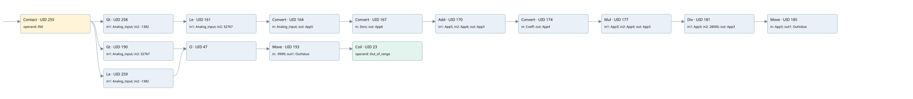

signal linearization
signal linearization · 검색 색인 순서 1 · 원본 내부 NID 추정 1
백업 PLF 원본의 2845895 바이트 위치에서 복원한 XML. 검색 문서 1658의 객체 키 16102200f611000000000000와 연결했다. 이름 해석 29/29개. 남은 RefId는 상수 또는 미해석 참조다.
연결 구조 다시 그리기
원본 Part/PCon/Wire를 이용한 연결도다. TIA 화면의 래더 배치 또는 실행 결과를 재현한 그림은 아니다. 핀 연결은 아래 표와 원본 XML을 기준으로 읽는다. 노드 위에 마우스를 두면 피연산자 이름을 볼 수 있다.

접점·코일·블록과 피연산자
| Part UID | Gate | Negated 핀 | 연결 피연산자 |
|---|---|---|---|
| 255 | Contact | operand = IN0 | |
| 258 | Gt | in1 = Analog_input; in2 = -1382 | |
| 161 | Le | in1 = Analog_input; in2 = 32767 | |
| 164 | Convert | in = Analog_input; out = App5 | |
| 167 | Convert | in = Zero; out = App6 | |
| 170 | Add | in1 = App5; in2 = App6; out = App3 | |
| 174 | Convert | in = Coeff; out = App4 | |
| 177 | Mul | in1 = App3; in2 = App4; out = App3 | |
| 181 | Div | in1 = App3; in2 = 28000; out = App3 | |
| 185 | Move | in = App3; out1 = OutValue | |
| 190 | Gt | in1 = Analog_input; in2 = 32767 | |
| 259 | Le | in1 = Analog_input; in2 = -1382 | |
| 47 | O | ||
| 193 | Move | in = -9999; out1 = OutValue | |
| 23 | Coil | operand = Out_of_range |
접점 경로를 펼친 조건식
Contact·O/A·비교기의 원본 연결을 읽기 쉽게 펼친 보조 해석이다. POWER는 전원 레일 시작을 뜻한다. 호출 블록·에지·타이머의 내부 동작과 다중 쓰기 순서는 이 표로 실행 검증하지 않았다. 미해석 핀과 RefId는 원문 연결표에서 확인한다.
| UID | 동작 | 대상 | 원본 접점 경로 | 내용 |
|---|---|---|---|---|
| 185 | Move | OutValue | Div UID 181.eno (블록 동작 확인) | Move 입력 App3 |
| 193 | Move | OutValue | ((IN0 AND [Analog_input > 32767]) OR (IN0 AND [Analog_input <= -1382])) | Move 입력 -9999 |
| 23 | Coil | Out_of_range | Move UID 193.eno (블록 동작 확인) | 조건에 따른 Coil 기록 |
원본 배선 연결
| Wire UID | 동일 Wire 연결 끝점 |
|---|---|
| 257 | Powerrail {} ↔ Part 255.in |
| 220 | ORef 196 (IN0) ↔ Part 255.operand |
| 256 | Part 255.out ↔ Part 258.pre ↔ Part 190.pre ↔ Part 259.pre |
| 30 | ORef 32 (Analog_input) ↔ Part 258.in1 |
| 31 | ORef 33 (-1382) ↔ Part 258.in2 |
| 25 | Part 258.out ↔ Part 161.pre |
| 27 | ORef 29 (Analog_input) ↔ Part 161.in1 |
| 28 | ORef 34 (32767) ↔ Part 161.in2 |
| 26 | Part 161.out ↔ Part 164.en |
| 225 | ORef 199 (Analog_input) ↔ Part 164.in |
| 227 | Part 164.eno ↔ Part 167.en |
| 226 | Part 164.out ↔ ORef 200 (App5) |
| 228 | ORef 201 (Zero) ↔ Part 167.in |
| 230 | Part 167.eno ↔ Part 170.en |
| 229 | Part 167.out ↔ ORef 202 (App6) |
| 231 | ORef 203 (App5) ↔ Part 170.in1 |
| 232 | ORef 204 (App6) ↔ Part 170.in2 |
| 234 | Part 170.eno ↔ Part 174.en |
| 233 | Part 170.out ↔ ORef 205 (App3) |
| 235 | ORef 206 (Coeff) ↔ Part 174.in |
| 237 | Part 174.eno ↔ Part 177.en |
| 236 | Part 174.out ↔ ORef 207 (App4) |
| 238 | ORef 208 (App3) ↔ Part 177.in1 |
| 239 | ORef 209 (App4) ↔ Part 177.in2 |
| 241 | Part 177.eno ↔ Part 181.en |
| 240 | Part 177.out ↔ ORef 210 (App3) |
| 242 | ORef 211 (App3) ↔ Part 181.in1 |
| 243 | ORef 212 (28000) ↔ Part 181.in2 |
| 245 | Part 181.eno ↔ Part 185.en |
| 244 | Part 181.out ↔ ORef 213 (App3) |
| 246 | ORef 214 (App3) ↔ Part 185.in |
| 247 | Part 185.out1 ↔ ORef 215 (OutValue) |
| 36 | ORef 42 (Analog_input) ↔ Part 190.in1 |
| 37 | ORef 43 (32767) ↔ Part 190.in2 |
| 35 | Part 190.out ↔ Part 47.in1 |
| 38 | ORef 40 (Analog_input) ↔ Part 259.in1 |
| 39 | ORef 41 (-1382) ↔ Part 259.in2 |
| 48 | Part 259.out ↔ Part 47.in2 |
| 49 | Part 47.out ↔ Part 193.en |
| 252 | ORef 218 (-9999) ↔ Part 193.in |
| 21 | Part 193.eno ↔ Part 23.in |
| 253 | Part 193.out1 ↔ ORef 219 (OutValue) |
| 22 | ORef 24 (Out_of_range) ↔ Part 23.operand |
식별자 해석 근거 29개
| ORef UID | RefId | 이름 | IdentXmlPart 파일 | 해석 방법 |
|---|---|---|---|---|
| 196 | 1 | IN0 | 0611-IdentXmlPart.xml | UID/RID + search-text + NID agreement |
| 32 | 3 | Analog_input | 0611-IdentXmlPart.xml | UID/RID + search-text + NID agreement |
| 33 | 25 | -1382 | 0612-IdentXmlPart.xml | literal candidate: UID/RID/NID + nearby named declarations + search-text agreement |
| 29 | 3 | Analog_input | 0611-IdentXmlPart.xml | UID/RID + search-text + NID agreement |
| 34 | 29 | 32767 | 0612-IdentXmlPart.xml | literal candidate: UID/RID/NID + nearby named declarations + search-text agreement |
| 199 | 3 | Analog_input | 0611-IdentXmlPart.xml | UID/RID + search-text + NID agreement |
| 200 | 6 | App5 | 0611-IdentXmlPart.xml | UID/RID + search-text + NID agreement |
| 201 | 8 | Zero | 0611-IdentXmlPart.xml | UID/RID + search-text + NID agreement |
| 202 | 9 | App6 | 0611-IdentXmlPart.xml | UID/RID + search-text + NID agreement |
| 203 | 6 | App5 | 0611-IdentXmlPart.xml | UID/RID + search-text + NID agreement |
| 204 | 9 | App6 | 0611-IdentXmlPart.xml | UID/RID + search-text + NID agreement |
| 205 | 11 | App3 | 0611-IdentXmlPart.xml | UID/RID + search-text + NID agreement |
| 206 | 13 | Coeff | 0611-IdentXmlPart.xml | UID/RID + search-text + NID agreement |
| 207 | 14 | App4 | 0611-IdentXmlPart.xml | UID/RID + search-text + NID agreement |
| 208 | 11 | App3 | 0611-IdentXmlPart.xml | UID/RID + search-text + NID agreement |
| 209 | 14 | App4 | 0611-IdentXmlPart.xml | UID/RID + search-text + NID agreement |
| 210 | 11 | App3 | 0611-IdentXmlPart.xml | UID/RID + search-text + NID agreement |
| 211 | 11 | App3 | 0611-IdentXmlPart.xml | UID/RID + search-text + NID agreement |
| 212 | 17 | 28000 | 0612-IdentXmlPart.xml | literal candidate: UID/RID/NID + nearby named declarations + search-text agreement |
| 213 | 11 | App3 | 0611-IdentXmlPart.xml | UID/RID + search-text + NID agreement |
| 214 | 11 | App3 | 0611-IdentXmlPart.xml | UID/RID + search-text + NID agreement |
| 215 | 19 | OutValue | 0611-IdentXmlPart.xml | UID/RID + search-text + NID agreement |
| 42 | 3 | Analog_input | 0611-IdentXmlPart.xml | UID/RID + search-text + NID agreement |
| 43 | 29 | 32767 | 0612-IdentXmlPart.xml | literal candidate: UID/RID/NID + nearby named declarations + search-text agreement |
| 40 | 3 | Analog_input | 0611-IdentXmlPart.xml | UID/RID + search-text + NID agreement |
| 41 | 25 | -1382 | 0612-IdentXmlPart.xml | literal candidate: UID/RID/NID + nearby named declarations + search-text agreement |
| 218 | 21 | -9999 | 0612-IdentXmlPart.xml | literal candidate: UID/RID/NID + nearby named declarations + search-text agreement |
| 219 | 19 | OutValue | 0611-IdentXmlPart.xml | UID/RID + search-text + NID agreement |
| 24 | 26 | Out_of_range | 0611-IdentXmlPart.xml | UID/RID + search-text + NID agreement |
검색 코드 보조 자료
참조 명칭을 찾기 위한 자료이며 실행 순서나 AND/OR 관계는 위 연결표로 확인한다.
#in0 #analog_input -1382 #analog_input 32767 convert #analog_input convert #zero add #app5 #app6 convert #coeff mul #app3 #app4 div #app3 28000 move #app3 #analog_input 32767 move -9999 #out_of_range #outvalue #analog_input -1382 #app5 #app6 #app3 #app4 #app3 #app3 #outvalue